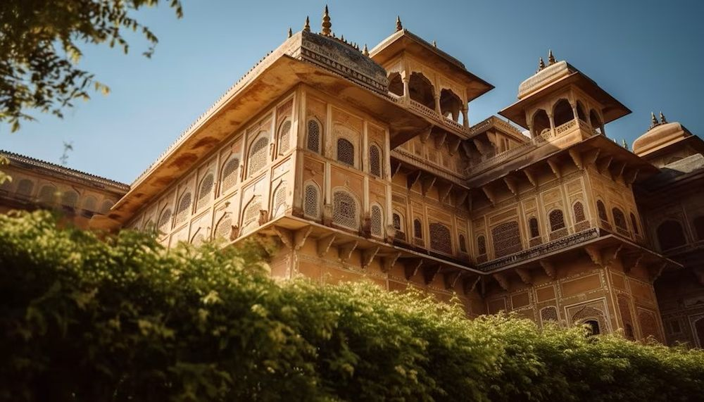

Descoperă Palermo - O incursiune în inima Siciliei
Palermo este un oraș vibrant din Sicilia, renumit pentru istorie, artă și peisaje pitorești:
-

Catedrala din Palermo - Simbol istoric
O catedrală impresionantă, amestecând stiluri arhitecturale din diferite epoci.
-

Palatul Norman - Mărturie a trecutului
Un palat grandios cu mozaicuri bizantine și influențe arabe, reflecție a diversității istorice.
-

Piețele tradiționale - Arome și culori
Piața Ballarò și Piața Vucciria oferă experiențe autentice de shopping și gastronomie.
-

Teatro Massimo - Eleganță artistică
Un teatru imens și impresionant, gazda spectacolelor culturale și muzicale de elită.
-

Plajele - Relaxare la mare
Împrejurimile Palermo includ plaje superbe, cum ar fi Mondello, perfecte pentru o evadare la mare.
Concluzii
Palermo te îmbie cu istoria sa bogată, peisaje de coastă și o varietate culturală fascinantă.